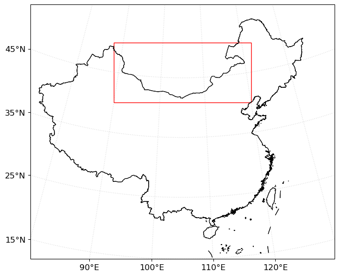
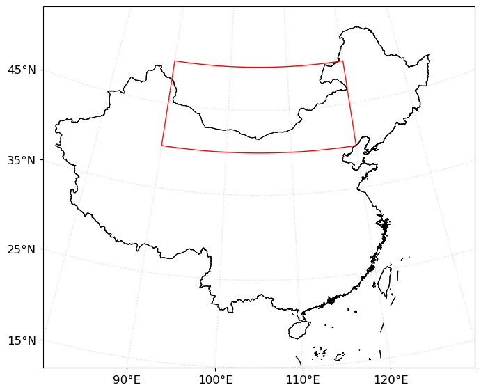
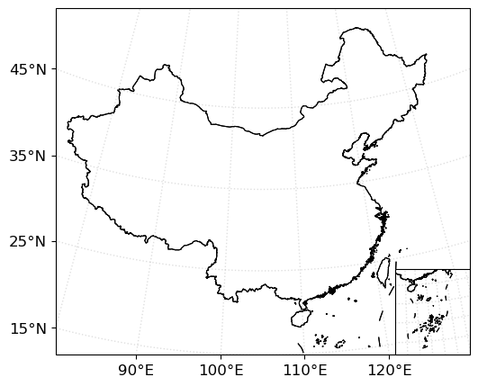
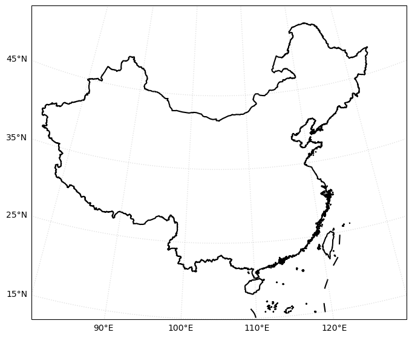
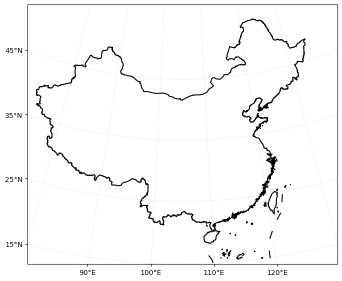
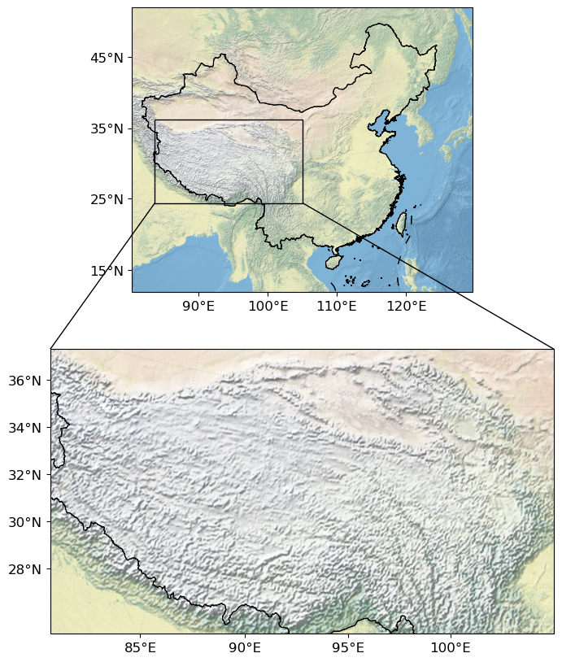
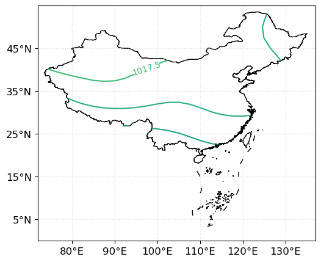
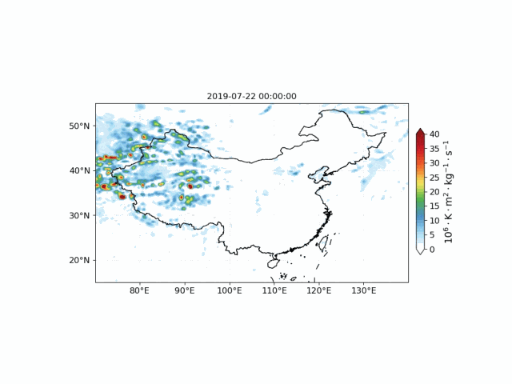
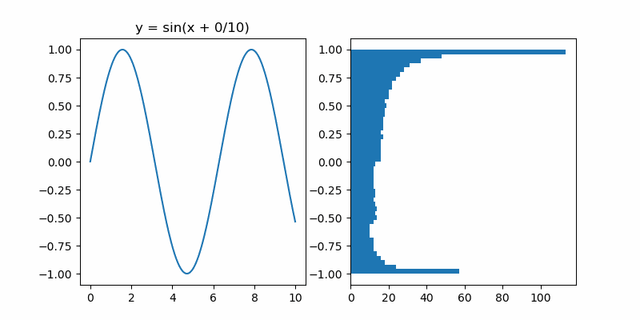

测试Tools文件夹下的GraphTools.py
1. 测试box_select_rectangular函数
在图中指定范围的区域
import numpy as np
import cartopy.crs as ccrs
import matplotlib.pyplot as plt
from MeteoPy import Draw_map
from MeteoPy import box_select_rectangular
1.1 默认格式，不开smooth
map_proj = ccrs.LambertConformal(
central_longitude=105, standard_parallels=(25, 47)
)
# map_proj = ccrs.PlateCarree()
# # 创建空白画布
fig = plt.figure(figsize=(8, 10))
ax = fig.add_subplot(1, 1, 1, projection=map_proj)
# # 创建绘图实例
draw = Draw_map()
draw.comunity_maps(ax, extent=[80, 130, 15, 55], xticks=np.arange(80, 130.1, 10),
yticks=np.arange(5, 45.1, 10), cnmap={'country':'中华人民共和国'})
box_select_rectangular(ax, [90, 120, 40, 50], type={'color':'r'})

1.2 打开smooth
map_proj = ccrs.LambertConformal(
central_longitude=105, standard_parallels=(25, 47)
)
# map_proj = ccrs.PlateCarree()
# # 创建空白画布
fig = plt.figure(figsize=(8, 10))
ax = fig.add_subplot(1, 1, 1, projection=map_proj)
# # 创建绘图实例
draw = Draw_map()
draw.comunity_maps(ax, extent=[80, 130, 15, 55], xticks=np.arange(80, 130.1, 10),
yticks=np.arange(5, 45.1, 10), cnmap={'country':'中华人民共和国'})
box_select_rectangular(ax, [90, 120, 40, 50], smooth=20, type={'color':'r'})

2. 测试adjust_sub_axes函数
主要用于绘制南海小地图
import numpy as np
import cartopy.crs as ccrs
import matplotlib.pyplot as plt
from MeteoPy import Draw_map
from MeteoPy import adjust_sub_axes
绘制南海小地图
# # 直接绘制南海小地图
map_proj = ccrs.LambertConformal(
central_longitude=105, standard_parallels=(25, 47)
)
# # 创建空白画布
fig = plt.figure(figsize=(8, 5))
ax = fig.add_subplot(1, 1, 1, projection=map_proj)
# # 创建绘图实例
draw = Draw_map()
draw.comunity_maps(ax, extent=[80, 130, 15, 55], xticks=np.arange(80, 130.1, 10),
yticks=np.arange(5, 45.1, 10), cnmap={'country':'中华人民共和国'})
# 绘制南海小地图
ax1 = fig.add_subplot(1, 1, 1, projection=ax.projection)
draw.comunity_maps(ax1, extent=[105, 123, 2, 23], tick=[0, 0], cnmap={'country':'中华人民共和国'})
adjust_sub_axes(ax, ax1, 0.18)

3. 测试gridlines_tick类
主要用于给gridline生成经纬度刻度，适用于兰伯特投影、柱投影
import numpy as np
import cartopy.crs as ccrs
import matplotlib.pyplot as plt
from cnmaps import draw_maps, get_adm_maps
from MeteoPy import gridlines_tick
3.1 不使用gridlines_tick
map_proj = ccrs.LambertConformal(
central_longitude=105, standard_parallels=(25, 47)
)
# map_proj = ccrs.PlateCarree()
# # 创建空白画布
fig = plt.figure(figsize=(8, 10))
ax = fig.add_subplot(1, 1, 1, projection=map_proj)
# # 剪切地图
ax.set_extent([80, 130, 15, 55], crs=ccrs.PlateCarree())
# # 设置中国地图
map = get_adm_maps(country='中华人民共和国')
draw_maps(map, ax)
# # 设置网格
gl = ax.gridlines(xlocs=np.arange(80, 130.1, 10), ylocs=np.arange(5, 45.1, 10),
x_inline=False, y_inline=False, draw_labels=True, linestyle="dotted",
linewidth=1, alpha=0.4)
# 关闭上面和右边的经纬度显示
gl.top_labels = False #关闭上部经纬标签
gl.right_labels = False # 关闭右侧经纬度标签
gl.rotate_labels = None # 关闭坐标旋转

3.2 使用gridlines_tick
map_proj = ccrs.LambertConformal(
central_longitude=105, standard_parallels=(25, 47)
)
# map_proj = ccrs.PlateCarree()
# # 创建空白画布
fig = plt.figure(figsize=(8, 10))
ax = fig.add_subplot(1, 1, 1, projection=map_proj)
# # 剪切地图
ax.set_extent([80, 130, 15, 55], crs=ccrs.PlateCarree())
# # 设置中国地图
map = get_adm_maps(country='中华人民共和国')
draw_maps(map, ax)
# # 设置网格
xticks = np.arange(80, 130.1, 10)
yticks = np.arange(5, 45.1, 10)
gl = ax.gridlines(xlocs=xticks, ylocs=yticks, x_inline=False, y_inline=False,
draw_labels=False, linestyle="dotted",
linewidth=1, alpha=0.4) # 注意draw_labels要调成False
# 关闭上面和右边的经纬度显示
gl.top_labels = False #关闭上部经纬标签
gl.right_labels = False # 关闭右侧经纬度标签
gl.rotate_labels = None # 关闭坐标旋转
gridlines_tick(ax, xticks, yticks)

4. 测试mark_inset函数
放大地图中的某一区域，连接子图。根据inset_axes的extent范围，在parent_axes中框出指定区域，如果为兰伯特投影，则选择刚好包含extent的矩形区域
import numpy as np
import cartopy.crs as ccrs
import matplotlib.pyplot as plt
from MeteoPy import mark_inset
from MeteoPy import Draw_map
map_proj = ccrs.LambertConformal(
central_longitude=105, standard_parallels=(25, 47)
)
# # 创建空白画布
fig = plt.figure(figsize=(8, 10))
ax = fig.add_subplot(2, 1, 1, projection=map_proj)
# # 创建绘图实例
draw = Draw_map()
draw.comunity_maps(ax, extent=[80, 130, 15, 55], xticks=np.arange(80, 130.1, 10),
yticks=np.arange(5, 45.1, 10), basemape=[{'地形':'../TestData/NE1_50M_SR_W.tif'}],
cnmap={'country':'中华人民共和国'})
# 绘制放大图
ax1 = fig.add_subplot(2, 1, 2, projection=ax.projection)
draw.comunity_maps(ax1, extent=[80, 105.1, 28, 38], xticks=np.arange(80, 105, 5),
yticks=np.arange(28, 38.1, 2), basemape=[{'地形':'../TestData/NE1_50M_SR_W.tif'}],
cnmap={'country':'中华人民共和国'})
mark_inset(ax, ax1)

5. 测试shp2clip地图白化函数
import numpy as np
import xarray as xr
import cartopy.crs as ccrs
import matplotlib.pyplot as plt
from MeteoPy import Draw_map
from MeteoPy import shp2clip
# # 创建空白画布
fig = plt.figure(figsize=(8, 5))
ax = fig.add_subplot(1, 1, 1, projection=ccrs.PlateCarree())
# # 创建绘图实例
draw = Draw_map()
draw.comunity_maps(ax, extent=[72, 137, 0, 55], xticks=np.arange(80, 130.1, 10),
yticks=np.arange(5, 45.1, 10), cnmap={'country':'中华人民共和国'})
data = xr.open_dataarray('../TestData/slp.mon.mean.nc')
data = data.mean(axis=0)
lon, lat = data['lon'], data['lat']
from scipy.ndimage import gaussian_filter
# 高斯滤波，9点平滑，空间平滑
data = gaussian_filter(data, sigma=2)
cs = ax.contour(lon, lat, data, 20)
c = ax.clabel(cs, inline=True, fontsize=10)
shp2clip(cs, ax, './country1.shp', [3, 'China'], clabel=c)

6. 测试image_to_gif()函数
import os
from MeteoPy import image_to_gif
os.listdir('../TestData/')
output:
['2019-07-22_00.jpg',
'2019-07-22_01.jpg',
'2019-07-22_02.jpg',
'2019-07-22_03.jpg',
'2019-07-22_04.jpg',
'2019-07-22_05.jpg',
'2019-07-22_06.jpg',
'2019-07-22_07.jpg',
'2019-07-22_08.jpg',
'2019-07-22_09.jpg',
'2019-07-22_10.jpg',
'2019-07-22_11.jpg',
'2019-07-22_12.jpg',
'2019-07-22_13.jpg',
'2019-07-22_14.jpg',
'2019-07-22_15.jpg',
'2019-07-22_16.jpg',
'2019-07-22_17.jpg',
'2019-07-22_18.jpg',
'2019-07-22_19.jpg',
'2019-07-22_20.jpg',
'2019-07-22_21.jpg',
'2019-07-22_22.jpg',
'2019-07-22_23.jpg']
image_to_gif('../TestData/', 'example1.gif', '.jpg', 100)

7. 测试gif()函数
import numpy as np
from MeteoPy import gif
import matplotlib.pyplot as plt
X = np.arange(0, 10, 0.01) # X shape： (N,)
Ys = [np.sin(X + k/10.0) for k in range(100)] # Ys shape： (k, N)
fig, axes = plt.subplots(nrows=1, ncols=2, figsize=(8, 4))
def animate(i):
axes[0].cla()
axes[0].plot(X, Ys[i])
axes[0].set_title(f'y = sin(x + {i}/10)')
axes[1].cla()
axes[1].hist(Ys[i], bins=50, orientation='horizontal')
gif(fig, animate, 'example2.gif', frames=20, interval=100)
